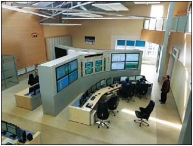

Electric power station in Opole
In December 2010, ZPAS-NET completed a project
comprising the supply and assembly of technical equipment
and interior design elements for the central control building
at PGE Elektrownia Opole. According to the order, ZPAS-NET
was expected to deliver materials and equipment, carry out
all required works and provide the agreed as-built
and take-over documentation (test, trial and check reports).
The deliveries and works included:
Electric power station in Opole
In December 2010, ZPAS-NET completed a project
comprising the supply and assembly of technical equipment
and interior design elements for the central control building
at PGE Elektrownia Opole. According to the order, ZPAS-NET
was expected to deliver materials and equipment, carry out
all required works and provide the agreed as-built
and take-over documentation (test, trial and check reports).
The deliveries and works included:
- fitting out and providing equipment for staff facilities,
- supplying the power generator, UPS and switchgear
complete with cabling – uninterrupted power supply
comprising two primary power supply circuits in the 19"
industrial version and modular inverter
(output power 90 kVA),
- supplying a video wall and large-size screens:
- 10-screen DLP video wall (10 modules of 50"
LED displays) with a total resolution of 7000x2100,
- LCD monitors CD 46",
- delivering racks and server cabinets complete with
cabling,
- delivering control desks, suport frames and furniture,
- delivering monitors, computers, printers and similar
equipment:
- LCD monitors 46",
- LCD monitors 24",
- LCD monitors 21",
- video signal amplifier KVM,
- delivery of cables, assembly and commissioning
of the equipment.
During the implementation of the main project, ZPAS-NET
completed another order for Elektrownia Opole:
– ”Communication system for blocks 1-4 supporting the
transmission of signals from the blocks to the mimic system
in the Central Control Room at PGE Elektrownia Opole S.A.”.
